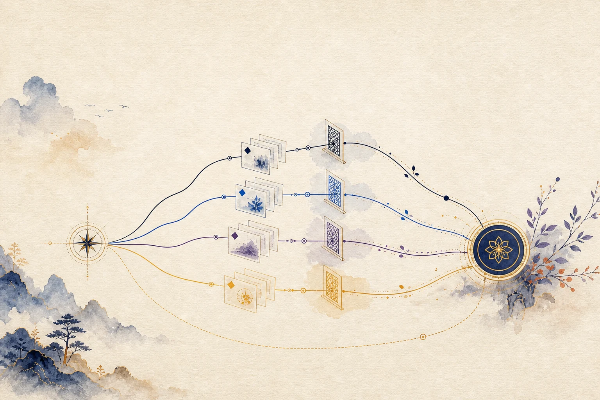

Field manual for evidence-driven work
先判斷，
再動手。
這不是指令字典，而是一本「遇到什麼任務，就知道該走哪條路」的實戰手冊。從一句自然語言目標，走到可驗證的證據、可重播的狀態，以及真正有權限的外部動作。
Choose by consequence, not by mood
三個問題，先決定要承擔多少證明責任
模板回答「這類任務要走哪些 stage」，mode 回答「要用多強的獨立驗證」。兩者不是同一件事；明確 selector 的最低強度也不能被降低。
先選任務類型，再看範圍與外部副作用。若結果仍是 built-in auto，它不是一個模板；必須根據證據再選一個真實 template。
路線判讀台
LIVE DECISION AIDArchitecture map
一次 governed run，實際經過六道門
Better Workflows 是工作流控制平面，不是另一個 agent runtime。它把 route、source identity、typed evidence、ledger、review 與外部 action 串成可重算的約束鏈。
證據不是附加報告，而是 stage 能否完成、side effect 能否授權、整體能否結案的輸入。Graph View 只讀、只投影，不能取代任何權限判斷。

證據資料流
Replay 的重點是從 persisted inputs 重建結論，而不是恢復模型當時沒有保存的 hidden reasoning。證據 ↘
Mechanism inventory
Mode 是強度；Template 是路線
先用 mode 表達驗證成本，再用 template 固定 stage、evidence 與 policy gates。不要因為任務看起來熟悉，就把 selector 已固定的 critical 降成 verified。
Template atlas
14 條可機器驗證的任務路線
Direct 沒有 evidence template：它保留 Goal persistence；Git 修改另建立最小 workspace lease，並在本任務專屬 worktree 執行。
Scenario tutorials
十四種常見任務，從第一句話教到停手
左側挑情境；右側會顯示可直接改寫的任務描述、正確入口、stage 流、證據清單與 fail-closed 紅燈。direct 是快速路徑，另有一般 PR 的五角色 quorum 路線。
Prompt workshop
把模糊願望改寫成可驗收的任務合約
這個產生器只組合文字，不會執行任何指令或外部動作。請先移除 secrets、私人程式碼與未授權資料。
Command shelf
知道哪一行只是看，哪一行真的會改狀態
能力快照與 route preview
READ-ONLY# cwd: repository root node plugins/better-workflows/scripts/sbw.mjs doctor --capabilities node plugins/better-workflows/scripts/sbw.mjs route preview \ --goal "<exact outcome>" --scope . --entry auto
檢查 template graph
READ-ONLY# cwd: repository root · Node >= 24 node plugins/better-workflows/scripts/sbw.mjs graph inspect \ --template review-to-issues --format mermaid
建立 governed run
STATE-WRITE# prerequisite: route 已確認、scope 已精確化 node plugins/better-workflows/scripts/sbw.mjs run \ --template review-to-issues --mode verified \ --goal "<exact outcome>" --scope .
請求並執行外部 action
EXTERNAL# prerequisite: user authority + current evidence + valid sentinel node plugins/better-workflows/scripts/sbw.mjs action issue <run-id> \ --action <kind> --provider <provider> \ --resource <exact-id> --remote-revision <revision> # wrapper-backed actions must use: action execute --token <token>
Applied essays
把規則放回真實工作的摩擦裡
以下不是抽象規範，而是六篇可拿來做團隊共識、onboarding 或 ADR 前言的短文。每篇都指出何時要快、何時必須慢，以及證據如何改變決策。
01二十分鐘的小修，為什麼不必開完整 run
Direct 的價值不是偷工，而是讓治理成本和風險成比例。
＋
二十分鐘的小修，為什麼不必開完整 run
Direct 的價值不是偷工，而是讓治理成本和風險成比例。
一個拼字錯誤、一段明確的型別修正，若範圍單點、可逆，而且驗證方式早已確定，建立 ledger、review package 與獨立 critic 可能比變更本身更昂貴。此時 Direct 是合理選擇：Root 不建立完整 evidence run；若要修改 Git repository，仍以最小 lease 綁定版本與任務，並在專屬 worktree 完成修改和基本檢查。
關鍵不在「檔案少」，而在不確定性、爆炸半徑與副作用。只要小修改開始牽涉 shared API、帳號狀態、production 或無法可靠回復，Direct 就失去資格。快速路徑應該有清楚出口，而不是變成高風險工作的別名。
02把 Code Review 變成可交付的 Issues
找到問題只是中間產物；去重、freshness 與 provider 終態才是交付。
＋
把 Code Review 變成可交付的 Issues
找到問題只是中間產物；去重、freshness 與 provider 終態才是交付。
傳統 review 容易把「看見」誤當「完成」。review-to-issues 把工作拆成 package、findings、dedupe、freshness 與 issue-action。Reviewer 維持唯讀；真正建立 issue 的外部副作用只由 Root 執行。
這個順序保護兩件事：第一，不把舊 SHA 的問題貼到已經修好的程式碼上；第二，不用重複 issue 污染 backlog。最後若 provider 回應 unknown，流程不能把它猜成失敗再送一次，而要查詢 provider 對帳。
03跨四端 API 變更，不能靠「同一天上線」
Compatibility 是資料流，不是一場同步會議。
＋
跨四端 API 變更，不能靠「同一天上線」
Compatibility 是資料流，不是一場同步會議。
Backend、Web、iOS、Android 的 release cadence 天生不同。「大家今天一起改」無法證明使用者手上的舊 mobile build 仍可運作。cross-platform-contract 先固定 server contract，再讓三個 client 分支檢查 model 與 headers，最後在 contract-tests 聚合。
若是 breaking change，two-phase policy 要求先擴充、再遷移、最後移除。Migration 與 API deploy 不是測試綠燈自然帶來的權限；它們仍是 Root-only action，必須綁定 scope、revision 與明確授權。
04CI 綠燈不是終點：外部世界還要對帳
Run success、deploy success 與 live state 是三種不同證據。
＋
CI 綠燈不是終點：外部世界還要對帳
Run success、deploy success 與 live state 是三種不同證據。
Workflow 顯示綠燈，只能證明那個 run 的 terminal result；它不能自動證明 target revision 正確、deploy 沒有被另一個 run 超車，或 production 已經 serving 新版本。ci-release-monitor 因此先 inventory、再 queue，序列化 monitor-execute，最後做 provider reconciliation。
目前同步版將沒有 immutable provider binding 的 actions 明確 deferred；GitHub Actions dispatch 不能用 mutable ref 原子綁定 preflight revision，因此不開放新的 executable token。缺少 provider authority 或 live reconciliation 時，正確終態是 blocked、inconclusive 或 indeterminate，而不是「大概成功」。
05把 SOP 做成 Recipe，但不讓它偷偷寫 Source
可重複執行不等於可以自由執行。
＋
把 SOP 做成 Recipe，但不讓它偷偷寫 Source
可重複執行不等於可以自由執行。
當團隊反覆做同一組 deterministic 步驟，workspace recipe 能把 SOP 固化成受治理的 Node.js artifact。流程先定義 contract，再以 fixture dry-run 比對真實執行語義，經 digest-bound trust 後才 promotion。
安全界線刻意狹窄：預設不允許 network、child process 或 source write；candidate evidence 也不會自動等同 acceptance。Promotion、execution 與 artifact publication 是不同的決策，不能因為 scaffold 成功就一路自動放行。
06Self-improve 不是「讀過聊天，所以我變好了」
改善必須由 frozen corpus、獨立 witness 與可重算 comparison 支持。
＋
Self-improve 不是「讀過聊天，所以我變好了」
改善必須由 frozen corpus、獨立 witness 與可重算 comparison 支持。
自我改善最危險的錯覺，是把熟悉感當成進步。self-improve-ops 要求 retrospective、candidate、train/holdout replay、sync review 與 delivery handoff。Evaluator replay 會從 immutable baseline/candidate、frozen corpus、重建 prompt 與 7／8 個 signed witness 重新計分。
平手、noise、任一 case regression、witness mismatch 或 host attestation 缺失，都不提供採用權限。No-change 是一級成果；真正的 delivery 則交接給 pr-to-dev，不能把 evaluator standing consent 擴張成 merge 或 deploy 授權。
Newcomer path
第一次使用，只記四件事
不必背模板名。Codex App 先輸入 / 搜尋 better；不確定時選 auto，然後用 route preview 看系統為什麼這樣選。
Senior engineer lens
讀 digest 鏈，不只讀最後一句 PASS
資深工程師最有價值的介入點，是找出 source、contract、evidence、review package 與 provider state 之間是否仍然同一個世界。
先確認你驗的是哪棵樹
HEAD、index、dirty status、scope、submodule、symlink 與 remote revision 都可能漂移。
- Commit 後重新 source rebind
- Wave 前後 capture / verify sentinel
- Drift 時丟棄該 wave 結論
Evidence kind 不是標籤
Receipt 必須符合 producer allowlist、payload semantics、時效性、digest 與 dependency fingerprints。
- 文字 PASS 不會改 ledger
- acceptanceIds 不能由 caller 自行宣告
- Resume 只重用 fingerprint 仍匹配的節點
Action 是一個新信任邊界
Action token 只把既有授權綁成短效、一次性的 exact attempt；它不創造權限。
- Root-only request
- Fixed wrapper actions 使用 execute
- Unknown outcome 必須 provider query
CTO lens
治理的產出，是更可靠的決策邊界
這套系統最值得衡量的不是 agent 數量，而是未知狀態被保留的比例、重複副作用被阻止的次數，以及從 source revision 到 provider 終態的可追溯性。
適合制度化的指標
完成時 evidence 與 current-tree sentinel 仍匹配的比例。
外部 action 有 terminal provider receipt 的比例。
在證據不足或 candidate 無提升時，正確不採用的比例。
交付變更具有 bounded rollback evidence 的比例。
目前不能由 codebase 證明
Repository 未提供真實使用頻率或團隊滲透率 telemetry。
沒有足夠 production runs 可估算各 mode 的平均完成時間。
無事故成本與治理成本對照，不能從測試數量推導商業回報。
102 種 evidence 與 host/provider gates 提高安全，也提高學習與營運成本。
Strengths, risks & unknowns
可靠之處與摩擦之處，都要有證據
以下把 FACT、INFERENCE、RISK 與 UNKNOWN 分開。看不到 production telemetry，就不把完整的型別系統推論成已證實的營運成功。
已被設計與測試支持
TaskContract v2 只接受 102-kind catalog 中的 typed evidence，並重驗 digest 與 semantic success。
Ledger append-only，依固定 reducer 重建狀態；嘗試預算耗盡是 machine-readable blocked。
Action token 短效且一次性；unknown provider outcome 不可被猜成 failure。
Review-enabled templates 會綁定 capability profile；kernel pilot 與 ordinary quorum 都不會直接取得 action token。
紅燈診療室
測試成功不等於 target revision、provider state 或 live environment 已對帳。
Graph View 是結構投影，不是 scheduler、policy input 或 authority source。
Resume 重用 persisted evidence；不會恢復模型 hidden reasoning。
Evaluator standing consent 不能擴張成 push、merge、deploy 或 cleanup 權限。
Change code safely
修改治理程式碼時，先辨認你正在改哪一層
Selector、template、evidence contract、ledger reducer、action wrapper 與文件彼此有同步關係。局部 patch 若沒有更新 machine-readable source 與 tests，很容易產生漂亮但錯誤的說明。
entrypoint-catalog、selector skill、README / guide，以及最低 mode 是否一致。
Catalog parse、所有 selector 可解析；auto 不可偽造成 template。
executionStages、requiredEvidence、policyGates、actionStages、rootOnlyActions。
graph validate --template <name>，並覆蓋 action-to-stage mapping。
evidence-contracts、producer allowlist、payload semantics、時效性與 revalidation。
未知 kind、空 payload、digest mismatch 與 stale binding 必須 fail closed。
合法 transition、budget、dependency DAG、expectedLedgerDigest 與 terminal states。
Replay determinism；caller 文字或 acceptanceIds 不能越權完成。
authority、exact provider/resource/revision、token TTL、wrapper 與 reconciliation。
Unknown / interrupted / duplicate reservation 路徑；禁止 blind retry。
原始碼 locator、版本 metadata、FACT / RISK / UNKNOWN 分類與可執行範例。
內部連結、script parse、secret scan、desktop/mobile browser QA。
Evidence appendix
每個重要說法，都能回到檔案與行號
來源清單同時保存事實、推論、風險與未知。本手冊是導覽層；machine-readable JSON、CLI validation 與 provider records 才是執行時權威。
observedAt: 2026-08-15T00:05:00+08:00 · implementation baseline: c5abd1fe7c580773c1cacb81dc0c01b58bf086d6 · documentation worktree: clean · scope: current Markdown + HTML surfaces
installed template sourceDigest: f1371f5477f6650a7d8999b7d2d8e99437db7286b75a8ef488cd31f56db3c8ab · evidence catalog: 102 kinds · review profiles: legacy contract + self-improve kernel pilot + ordinary agent quorum
validation boundary: graph diagnostics=0、review-profile binding checks PASS；本版未執行 provider actions，未將文件檢查宣稱為 delivery authority。